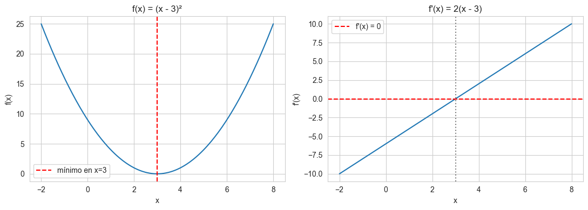
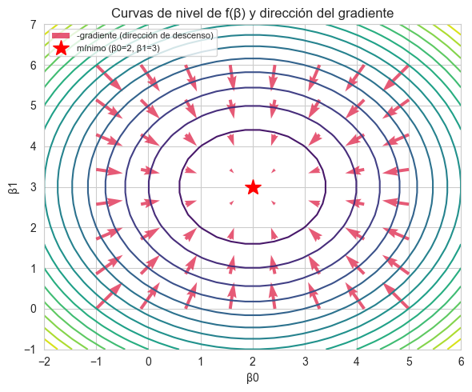
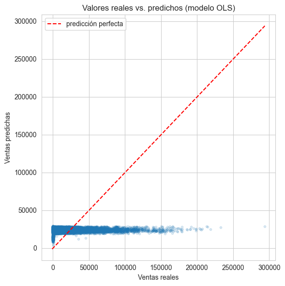
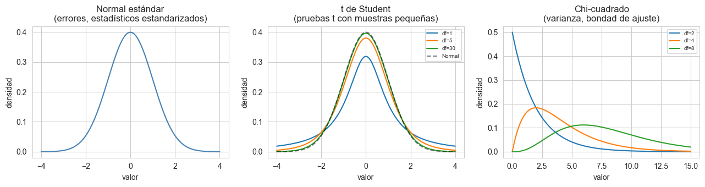

Sesión 2: Cálculo aplicado, Regresión OLS, Probabilidad e Inferencia#
Objetivo de la sesión: que el estudiante entienda y pueda reproducir en código la deducción matricial del estimador OLS, y que pueda cuantificar la incertidumbre asociada a los coeficientes estimados (errores estándar, intervalos de confianza, pruebas de hipótesis).
import numpy as np
import pandas as pd
import matplotlib.pyplot as plt
import seaborn as sns
from scipy import stats
from sklearn.linear_model import LinearRegression
import statsmodels.api as sm
sns.set_style("whitegrid")
%matplotlib inline
Bloque 1: Cálculo condensado (hacia OLS)#
Derivada: la pendiente de una función#
La derivada de una función \(f(x)\) en un punto mide qué tan rápido cambia \(f\) cuando \(x\) cambia. Geométricamente es la pendiente de la recta tangente.
Para funciones simples usamos reglas conocidas, por ejemplo:
Lo importante para nosotros: en un mínimo (o máximo) de una función suave, la derivada vale cero.
# Ejemplo numérico: f(x) = (x - 3)^2 tiene su mínimo en x = 3
x = np.linspace(-2, 8, 200)
f = (x - 3)**2
df = 2 * (x - 3) # derivada
fig, axes = plt.subplots(1, 2, figsize=(11, 4))
axes[0].plot(x, f)
axes[0].axvline(3, color="red", linestyle="--", label="mínimo en x=3")
axes[0].set_title("f(x) = (x - 3)²")
axes[0].set_xlabel("x"); axes[0].set_ylabel("f(x)")
axes[0].legend()
axes[1].plot(x, df)
axes[1].axhline(0, color="red", linestyle="--", label="f'(x) = 0")
axes[1].axvline(3, color="gray", linestyle=":")
axes[1].set_title("f'(x) = 2(x - 3)")
axes[1].set_xlabel("x"); axes[1].set_ylabel("f'(x)")
axes[1].legend()
plt.tight_layout()
plt.show()

La derivada se anula exactamente donde \(f\) alcanza su mínimo. Esta observación —condición de primer orden— es la idea central que vamos a extender a varias dimensiones para llegar a OLS.
Regla de la cadena#
Cuando una función está compuesta por otra, \(f(g(x))\), su derivada es:
La usaremos implícitamente al derivar expresiones cuadráticas que contienen productos matriciales, como \((\mathbf{y}-X\boldsymbol{\beta})^T(\mathbf{y}-X\boldsymbol{\beta})\).
Gradiente: la derivada en varias dimensiones#
Cuando la función depende de varias variables, \(f(\beta_0, \beta_1, \dots)\), ya no hay una sola derivada sino un vector de derivadas parciales, llamado gradiente:
La condición de primer orden en varias dimensiones es la misma idea: en el mínimo, el gradiente es el vector cero.
# Visualizacion del gradiente en 2D: f(b0, b1) = (b0-2)^2 + (b1-3)^2, minimo en (2, 3)
b0 = np.linspace(-2, 6, 30)
b1 = np.linspace(-1, 7, 30)
B0, B1 = np.meshgrid(b0, b1)
F = (B0 - 2)**2 + (B1 - 3)**2
# gradiente analitico: df/db0 = 2(b0-2), df/db1 = 2(b1-3)
b0_q = np.linspace(-1, 5, 8)
b1_q = np.linspace(0, 6, 8)
B0q, B1q = np.meshgrid(b0_q, b1_q)
dF0 = 2 * (B0q - 2)
dF1 = 2 * (B1q - 3)
fig, ax = plt.subplots(figsize=(6, 5))
cs = ax.contour(B0, B1, F, levels=15, cmap="viridis")
ax.quiver(B0q, B1q, -dF0, -dF1, color="crimson", alpha=0.7, label="-gradiente (dirección de descenso)")
ax.plot(2, 3, "r*", markersize=15, label="mínimo (β0=2, β1=3)")
ax.set_xlabel("β0"); ax.set_ylabel("β1")
ax.set_title("Curvas de nivel de f(β) y dirección del gradiente")
ax.legend(loc="upper left", fontsize=8)
plt.tight_layout()
plt.show()

Las flechas apuntan en la dirección de mayor descenso, y todas convergen hacia el mínimo donde el gradiente es cero. Esta es exactamente la lógica detrás de la deducción de OLS.
De la función de pérdida a la ecuación normal#
En regresión lineal buscamos el vector \(\boldsymbol{\beta}\) que minimiza la suma de errores al cuadrado:
Aplicando la condición de primer orden (derivar respecto a \(\boldsymbol{\beta}\) e igualar a cero):
Despejando:
Y como vimos en la sesión anterior, si \(X^TX\) es definida positiva (invertible):
# Comprobación numérica: en la solución óptima, el gradiente de la pérdida es (numéricamente) cero
np.random.seed(42)
X_demo = np.column_stack([np.ones(5), np.array([1, 2, 3, 4, 5])])
y_demo = np.array([2.1, 3.9, 6.2, 7.8, 10.1])
beta_hat_demo = np.linalg.inv(X_demo.T @ X_demo) @ X_demo.T @ y_demo
gradiente = -2 * X_demo.T @ (y_demo - X_demo @ beta_hat_demo)
print("β̂ =", beta_hat_demo)
print("Gradiente en β̂ (debería ser ≈ 0):", np.round(gradiente, 10))
β̂ = [0.05 1.99]
Gradiente en β̂ (debería ser ≈ 0): [0. 0.]
Bloque 2: Laboratorio — Regresión OLS aplicada#
Vamos a aplicar la fórmula \(\hat{\boldsymbol{\beta}} = (X^TX)^{-1}X^T\mathbf{y}\) a un dataset real: ventas semanales de tiendas, con variables como temperatura, precio del combustible y desempleo. Este mismo modelo se retomará en el bloque de inferencia para cuantificar la incertidumbre de los coeficientes.
datos = pd.read_csv("sales.csv")
datos = datos.drop(columns=["Unnamed: 0"])
print(datos.shape)
datos.head()
(10774, 9)
| store | type | department | date | weekly_sales | is_holiday | temperature_c | fuel_price_usd_per_l | unemployment | |
|---|---|---|---|---|---|---|---|---|---|
| 0 | 1 | A | 1 | 2010-02-05 | 24924.50 | False | 5.727778 | 0.679451 | 8.106 |
| 1 | 1 | A | 1 | 2010-03-05 | 21827.90 | False | 8.055556 | 0.693452 | 8.106 |
| 2 | 1 | A | 1 | 2010-04-02 | 57258.43 | False | 16.816667 | 0.718284 | 7.808 |
| 3 | 1 | A | 1 | 2010-05-07 | 17413.94 | False | 22.527778 | 0.748928 | 7.808 |
| 4 | 1 | A | 1 | 2010-06-04 | 17558.09 | False | 27.050000 | 0.714586 | 7.808 |
datos.describe()
| store | department | weekly_sales | temperature_c | fuel_price_usd_per_l | unemployment | |
|---|---|---|---|---|---|---|
| count | 10774.000000 | 10774.000000 | 10774.000000 | 10774.000000 | 10774.000000 | 10774.000000 |
| mean | 15.441897 | 45.218118 | 23843.950149 | 15.731978 | 0.749746 | 8.082009 |
| std | 11.534511 | 29.867779 | 30220.387557 | 9.922446 | 0.059494 | 0.624355 |
| min | 1.000000 | 1.000000 | -1098.000000 | -8.366667 | 0.664129 | 3.879000 |
| 25% | 4.000000 | 20.000000 | 3867.115000 | 7.583333 | 0.708246 | 7.795000 |
| 50% | 13.000000 | 40.000000 | 12049.065000 | 16.966667 | 0.743381 | 8.099000 |
| 75% | 20.000000 | 72.000000 | 32349.850000 | 24.166667 | 0.781421 | 8.360000 |
| max | 39.000000 | 99.000000 | 293966.050000 | 33.827778 | 1.107674 | 9.765000 |
Variable respuesta y predictoras#
Respuesta (\(y\)):
weekly_sales— ventas semanales de la tienda/departamento.Predictoras (\(X\)):
temperature_c,fuel_price_usd_per_l,unemployment.
Este es un modelo simplificado con fines didácticos (en la práctica también se controlaría por tienda, departamento y estacionalidad).
y = datos["weekly_sales"].values
predictoras = ["temperature_c", "fuel_price_usd_per_l", "unemployment"]
X_raw = datos[predictoras].values
# Matriz de diseño: agregar columna de 1s para el intercepto
n = X_raw.shape[0]
X = np.column_stack([np.ones(n), X_raw])
print("Dimensión de X (matriz de diseño):", X.shape)
print("Dimensión de y:", y.shape)
Dimensión de X (matriz de diseño): (10774, 4)
Dimensión de y: (10774,)
# Método 1: fórmula cerrada con la inversa explícita
beta_hat_inv = np.linalg.inv(X.T @ X) @ X.T @ y
# Método 2: resolver el sistema lineal directamente (más estable numéricamente,
# evita calcular la inversa de forma explícita)
beta_hat_solve = np.linalg.solve(X.T @ X, X.T @ y)
nombres_coef = ["intercepto"] + predictoras
resultado_manual = pd.DataFrame({
"coeficiente": nombres_coef,
"beta_hat (inv)": beta_hat_inv,
"beta_hat (solve)": beta_hat_solve
})
resultado_manual
| coeficiente | beta_hat (inv) | beta_hat (solve) | |
|---|---|---|---|
| 0 | intercepto | 30729.179814 | 30729.179814 |
| 1 | temperature_c | -96.484389 | -96.484389 |
| 2 | fuel_price_usd_per_l | -35848.899508 | -35848.899508 |
| 3 | unemployment | 2661.494814 | 2661.494814 |
Nota: np.linalg.solve es preferible a calcular np.linalg.inv explícitamente en la práctica, porque es numéricamente más estable y más eficiente — invertir una matriz es un paso intermedio que rara vez se necesita por sí solo. Aquí mostramos ambos porque conceptualmente son la misma fórmula.
# Validación contra scikit-learn
modelo_sklearn = LinearRegression()
modelo_sklearn.fit(X_raw, y)
resultado_manual["beta_hat (sklearn)"] = [modelo_sklearn.intercept_] + list(modelo_sklearn.coef_)
resultado_manual
| coeficiente | beta_hat (inv) | beta_hat (solve) | beta_hat (sklearn) | |
|---|---|---|---|---|
| 0 | intercepto | 30729.179814 | 30729.179814 | 30729.179814 |
| 1 | temperature_c | -96.484389 | -96.484389 | -96.484389 |
| 2 | fuel_price_usd_per_l | -35848.899508 | -35848.899508 | -35848.899508 |
| 3 | unemployment | 2661.494814 | 2661.494814 | 2661.494814 |
Los tres métodos coinciden (hasta errores de redondeo). Esto confirma que sklearn.LinearRegression no hace magia: internamente resuelve la misma ecuación normal que dedujimos con cálculo y calculamos a mano con álgebra lineal.
Interpretación de los coeficientes#
El intercepto es el nivel esperado de ventas cuando todas las predictoras son cero (interpretación literal poco útil aquí, pero necesaria como ancla del modelo).
Cada coeficiente indica el cambio esperado en
weekly_salespor cada unidad adicional de esa variable, manteniendo las demás constantes.
# Predicciones vs valores reales
y_pred = X @ beta_hat_solve
plt.figure(figsize=(6, 6))
plt.scatter(y, y_pred, alpha=0.15, s=10)
lims = [min(y.min(), y_pred.min()), max(y.max(), y_pred.max())]
plt.plot(lims, lims, color="red", linestyle="--", label="predicción perfecta")
plt.xlabel("Ventas reales")
plt.ylabel("Ventas predichas")
plt.title("Valores reales vs. predichos (modelo OLS)")
plt.legend()
plt.tight_layout()
plt.show()
r2 = 1 - np.sum((y - y_pred)**2) / np.sum((y - y.mean())**2)
print(f"R² del modelo: {r2:.4f}")

R² del modelo: 0.0073
El \(R^2\) es bajo — esperable, porque solo usamos tres variables macro y el dataset mezcla muchas tiendas y departamentos con niveles de venta muy distintos. El punto pedagógico no es la calidad predictiva sino verificar que el mecanismo matemático (álgebra → cálculo → OLS) funciona igual que en sklearn.
Bloque 3: Probabilidad esencial#
Axiomas básicos#
Para cualquier evento \(A\):
\(P(A) \geq 0\)
\(P(\Omega) = 1\) (el espacio muestral completo tiene probabilidad 1)
Si \(A\) y \(B\) son mutuamente excluyentes: \(P(A \cup B) = P(A) + P(B)\)
Probabilidad condicional y Teorema de Bayes#
El Teorema de Bayes permite “invertir” la condicional:
Veámoslo aplicado sobre el mismo dataset de ventas: ¿la probabilidad de que una semana sea de alta venta cambia si sabemos que es semana de feriado (is_holiday)?
# Definimos "alta venta" como estar por encima de la mediana
umbral = datos["weekly_sales"].median()
datos["alta_venta"] = datos["weekly_sales"] > umbral
tabla = pd.crosstab(datos["is_holiday"], datos["alta_venta"], normalize="index") * 100
tabla.columns = ["Venta baja (%)", "Venta alta (%)"]
tabla.index = ["No feriado", "Feriado"]
tabla.round(2)
| Venta baja (%) | Venta alta (%) | |
|---|---|---|
| No feriado | 49.8 | 50.2 |
| Feriado | 100.0 | 0.0 |
p_alta = (datos["alta_venta"]).mean()
p_alta_dado_feriado = datos.loc[datos["is_holiday"], "alta_venta"].mean()
p_feriado = datos["is_holiday"].mean()
# Bayes: P(feriado | alta venta) = P(alta venta | feriado) * P(feriado) / P(alta venta)
p_feriado_dado_alta = (p_alta_dado_feriado * p_feriado) / p_alta
print(f"P(alta venta) = {p_alta:.4f}")
print(f"P(alta venta | feriado) = {p_alta_dado_feriado:.4f}")
print(f"P(feriado | alta venta) [Bayes] = {p_feriado_dado_alta:.4f}")
print(f"P(feriado) [base] = {p_feriado:.4f}")
P(alta venta) = 0.5000
P(alta venta | feriado) = 0.0000
P(feriado | alta venta) [Bayes] = 0.0000
P(feriado) [base] = 0.0039
Si \(P(\text{feriado}\mid\text{alta venta}) > P(\text{feriado})\), saber que una semana tuvo alta venta hace más probable que haya sido feriado — es decir, la información sobre las ventas actualiza nuestra creencia sobre si fue feriado. Esta es la lógica de Bayes: actualizar probabilidades con nueva evidencia.
Variables aleatorias y distribuciones clave#
Una variable aleatoria puede ser:
Discreta: toma valores contables (ej. número de feriados en un mes).
Continua: toma cualquier valor en un rango (ej.
weekly_sales,temperature_c).
Tres distribuciones son especialmente importantes para lo que sigue (inferencia sobre los coeficientes de OLS):
x_vals = np.linspace(-4, 4, 300)
fig, axes = plt.subplots(1, 3, figsize=(13, 3.5))
axes[0].plot(x_vals, stats.norm.pdf(x_vals), color="steelblue")
axes[0].set_title("Normal estándar\n(errores, estadísticos estandarizados)")
for df_ in [1, 5, 30]:
axes[1].plot(x_vals, stats.t.pdf(x_vals, df=df_), label=f"df={df_}")
axes[1].plot(x_vals, stats.norm.pdf(x_vals), "k--", alpha=0.5, label="Normal")
axes[1].set_title("t de Student\n(pruebas t con muestras pequeñas)")
axes[1].legend(fontsize=7)
x_chi = np.linspace(0, 15, 300)
for df_ in [2, 4, 8]:
axes[2].plot(x_chi, stats.chi2.pdf(x_chi, df=df_), label=f"df={df_}")
axes[2].set_title("Chi-cuadrado\n(varianza, bondad de ajuste)")
axes[2].legend(fontsize=7)
for ax in axes:
ax.set_xlabel("valor"); ax.set_ylabel("densidad")
plt.tight_layout()
plt.show()

La Normal aparece porque, bajo supuestos estándar, los errores de OLS y los coeficientes estimados se distribuyen (aproximadamente) normal.
La t de Student aparece al estimar la varianza con una muestra finita (como haremos con los errores estándar de \(\hat{\boldsymbol{\beta}}\)): es una Normal “más ancha” que se acerca a la Normal cuando el tamaño de muestra crece.
La Chi-cuadrado aparece en la estimación de la varianza de los errores y en pruebas de bondad de ajuste.
Bloque 4: Inferencia esencial#
Estimación puntual vs. intervalo de confianza#
Un estimador puntual (como \(\bar{x}\) para la media) da un solo número, pero no dice nada sobre qué tan confiable es. Un intervalo de confianza (IC) agrega esa incertidumbre:
donde \(s\) es la desviación estándar muestral y \(t_{\alpha/2, n-1}\) es el cuantil de la distribución t.
muestra = datos["weekly_sales"].sample(200, random_state=42)
media = muestra.mean()
error_estandar = muestra.std(ddof=1) / np.sqrt(len(muestra))
t_critico = stats.t.ppf(0.975, df=len(muestra) - 1)
ic_inferior = media - t_critico * error_estandar
ic_superior = media + t_critico * error_estandar
print(f"Media muestral: {media:.2f}")
print(f"Error estándar: {error_estandar:.2f}")
print(f"IC 95%: [{ic_inferior:.2f}, {ic_superior:.2f}]")
Media muestral: 23975.88
Error estándar: 2259.13
IC 95%: [19520.97, 28430.79]
Interpretación correcta: si repitiéramos este muestreo muchas veces y construyéramos un IC 95% cada vez, esperaríamos que el 95% de esos intervalos contengan la verdadera media poblacional. No significa que hay 95% de probabilidad de que la media verdadera esté en este intervalo específico (la media verdadera es fija, no aleatoria).
Prueba de hipótesis: ¿las ventas en feriados son distintas?#
ventas_feriado = datos.loc[datos["is_holiday"], "weekly_sales"]
ventas_no_feriado = datos.loc[~datos["is_holiday"], "weekly_sales"]
t_stat, p_valor = stats.ttest_ind(ventas_feriado, ventas_no_feriado, equal_var=False)
print(f"Media en feriado: {ventas_feriado.mean():.2f}")
print(f"Media en no feriado: {ventas_no_feriado.mean():.2f}")
print(f"Estadístico t: {t_stat:.4f}")
print(f"Valor-p: {p_valor:.6f}")
Media en feriado: 600.55
Media en no feriado: 23934.91
Estadístico t: -69.8121
Valor-p: 0.000000
Interpretación correcta del valor-p: es la probabilidad de observar una diferencia de medias tan extrema (o más) que la observada, asumiendo que \(H_0\) es verdadera (que no hay diferencia real). No es la probabilidad de que \(H_0\) sea verdadera, ni la probabilidad de “haberse equivocado” si se rechaza.
Con un umbral convencional de \(\alpha = 0.05\): si el valor-p es menor que \(\alpha\), se rechaza \(H_0\) — hay evidencia de que las ventas en feriado difieren de las de no feriado.
Bloque 5: Proyecto integrador mini#
Ahora conectamos todo: tomamos el \(\hat{\boldsymbol{\beta}}\) calculado en el Bloque 2 y le agregamos incertidumbre. La pregunta ya no es solo “¿cuál es el efecto estimado de cada variable?” sino “¿ese efecto es estadísticamente distinguible de cero?”
Errores estándar de los coeficientes#
Bajo los supuestos clásicos de OLS, la matriz de varianza-covarianza de \(\hat{\boldsymbol{\beta}}\) es:
con \(\hat{\epsilon}_i = y_i - \hat{y}_i\) los residuos, \(n\) el número de observaciones y \(p\) el número de parámetros (incluido el intercepto).
residuos = y - y_pred
n_obs, p_params = X.shape
sigma2_hat = np.sum(residuos**2) / (n_obs - p_params)
var_beta = sigma2_hat * np.linalg.inv(X.T @ X)
errores_estandar = np.sqrt(np.diag(var_beta))
t_stats = beta_hat_solve / errores_estandar
p_valores = 2 * (1 - stats.t.cdf(np.abs(t_stats), df=n_obs - p_params))
t_crit = stats.t.ppf(0.975, df=n_obs - p_params)
ic_inf = beta_hat_solve - t_crit * errores_estandar
ic_sup = beta_hat_solve + t_crit * errores_estandar
tabla_inferencia = pd.DataFrame({
"coeficiente": nombres_coef,
"beta_hat": beta_hat_solve,
"error_std": errores_estandar,
"t_stat": t_stats,
"p_valor": p_valores,
"IC_95_inf": ic_inf,
"IC_95_sup": ic_sup
})
tabla_inferencia.round(4)
| coeficiente | beta_hat | error_std | t_stat | p_valor | IC_95_inf | IC_95_sup | |
|---|---|---|---|---|---|---|---|
| 0 | intercepto | 30729.1798 | 5135.1980 | 5.9840 | 0.0000 | 20663.2454 | 40795.1142 |
| 1 | temperature_c | -96.4844 | 29.9207 | -3.2247 | 0.0013 | -155.1344 | -37.8344 |
| 2 | fuel_price_usd_per_l | -35848.8995 | 5010.0940 | -7.1553 | 0.0000 | -45669.6070 | -26028.1920 |
| 3 | unemployment | 2661.4948 | 467.3036 | 5.6954 | 0.0000 | 1745.4937 | 3577.4959 |
Validación contra statsmodels#
statsmodels calcula exactamente esto con .summary(). Lo usamos para confirmar que el cálculo manual es correcto.
X_sm = sm.add_constant(X_raw)
modelo_sm = sm.OLS(y, X_sm).fit()
print(modelo_sm.summary())
OLS Regression Results
==============================================================================
Dep. Variable: y R-squared: 0.007
Model: OLS Adj. R-squared: 0.007
Method: Least Squares F-statistic: 26.26
Date: Tue, 18 Aug 2026 Prob (F-statistic): 6.46e-17
Time: 17:09:21 Log-Likelihood: -1.2640e+05
No. Observations: 10774 AIC: 2.528e+05
Df Residuals: 10770 BIC: 2.528e+05
Df Model: 3
Covariance Type: nonrobust
==============================================================================
coef std err t P>|t| [0.025 0.975]
------------------------------------------------------------------------------
const 3.073e+04 5135.198 5.984 0.000 2.07e+04 4.08e+04
x1 -96.4844 29.921 -3.225 0.001 -155.134 -37.834
x2 -3.585e+04 5010.094 -7.155 0.000 -4.57e+04 -2.6e+04
x3 2661.4948 467.304 5.695 0.000 1745.494 3577.496
==============================================================================
Omnibus: 4944.965 Durbin-Watson: 0.209
Prob(Omnibus): 0.000 Jarque-Bera (JB): 25704.448
Skew: 2.215 Prob(JB): 0.00
Kurtosis: 9.134 Cond. No. 451.
==============================================================================
Notes:
[1] Standard Errors assume that the covariance matrix of the errors is correctly specified.
Discusión guiada#
Comparen la tabla calculada a mano con la salida de statsmodels:
Los coeficientes (
beta_hat) deben coincidir concoefen el resumen destatsmodels.Los errores estándar (
error_std) deben coincidir constd err.Los estadísticos t y valores-p deben coincidir con
tyP>|t|.Los intervalos de confianza deben coincidir con
[0.025, 0.975].
Para cada coeficiente: si el intervalo de confianza no contiene el cero, hay evidencia de que esa variable tiene un efecto real (distinto de cero) sobre las ventas semanales, al 95% de confianza — equivalente a que su valor-p sea menor a 0.05.
Cierre y retroalimentación#
Síntesis del arco completo#
Álgebra lineal (sesión anterior): representamos los datos como matrices y dedujimos que \(\hat{\boldsymbol{\beta}} = (X^TX)^{-1}X^T\mathbf{y}\) resuelve el problema, apoyándonos en que \(X^TX\) es simétrica y definida positiva.
Cálculo (este bloque): mostramos por qué esa fórmula es la solución — es el punto donde el gradiente de la función de pérdida se anula.
Aplicación: calculamos \(\hat{\boldsymbol{\beta}}\) a mano sobre datos reales y confirmamos que coincide con
scikit-learn.Probabilidad: revisamos las herramientas (Bayes, distribuciones Normal/t/Chi-cuadrado) necesarias para hablar de incertidumbre.
Inferencia: le agregamos incertidumbre a \(\hat{\boldsymbol{\beta}}\) — errores estándar, intervalos de confianza, pruebas de hipótesis — y lo validamos contra
statsmodels.
Brechas remanentes (material de refuerzo autodirigido)#
Este nivelatorio comprimido no alcanza a cubrir todo. Para quienes quieran reforzar por su cuenta:
Regla de Cramer y métodos alternativos para resolver sistemas lineales.
Integrales (complemento natural de la derivada, útil para funciones de densidad de probabilidad).
Curtosis y asimetría como medidas adicionales de forma de una distribución.
Combinatoria (permutaciones, combinaciones), base de la probabilidad discreta más formal.
Preguntas de cierre (para discusión)#
¿Por qué el gradiente de la función de pérdida se anula exactamente en el mínimo?
Si un coeficiente tiene un intervalo de confianza que sí contiene el cero, ¿qué se puede concluir sobre esa variable?
¿Cuál es la interpretación correcta de un valor-p de 0.03 en una prueba de hipótesis?
¿Por qué usamos la distribución t (y no la Normal) para construir el intervalo de confianza de los coeficientes de OLS?